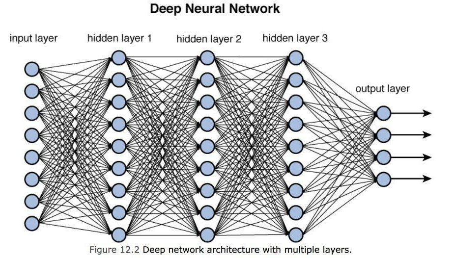
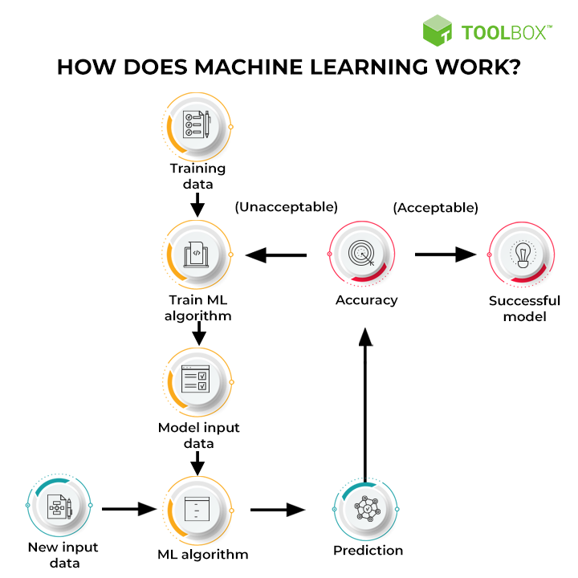
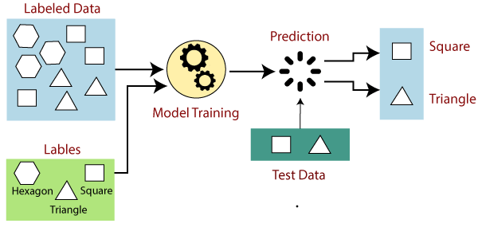
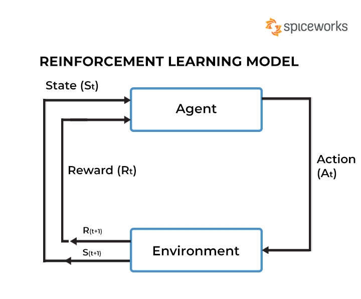

What is Machine Learning?
Machine Learning is a branch of Artificial Intelligence that essentially focuses on the creation of complex computer algorithms that accomplish complex tasks that cannot be easily accomplished through normal computer programming. These complex tasks include grammar checking, image generation, intelligent text generation, and other intelligent tasks.
In Machine Learning, data is used to train programs called Machine Learning models. In most methods of Machine Learning, a Machine Learning model trains on a set of data, performing a complex task based on the information given to it by the set of data. As the Machine Learning model continues to train, it essentially gets better and better at doing its complex task. Then, once the engineers deem that the model meets certain requirements and can accomplish its complex task well enough, the Machine Learning model can be deemed as the final version of the model which can then undergo other processes like testing and error evaluation.
How does Machine Learning work?
Keep in mind that there are many methods of Machine Learning, each of which goes through the process of training a Machine Learning model slightly differently from each other. However, most Machine Learning methods go through a similar process that is reflected by the flowchart on the right. Though we did briefly touch on this general process in the previous section, we will go into much greater detail about it in this section.
First, the model is trained through the use of training data. After the model is trained, it is then tested through the use of another data set. This test of the model is to see if the model can already do its intended task well enough after it underwent training. If the model passes the test, then it can be deemed a successful model. On the other hand, if the model fails the test, the entire process starts over again with a new set of data and a few alterations to the model.

The Different Methods of Machine Learning
There are many different Machine Learning methods however, there are 3 major methods of Machine Learning that are worth mentioning since it's under these 3 major methods where a lot of the other Machine Learning methods reside.
Supervised Machine Learning Unsupervised Machine Learning Reinforcement Machine Learning
Supervised Machine Learning
Supervised Machine Learning is a method of Machine Learning that uses labeled data sets to train Machine Learning models. What does this mean? It essentially means that the data set that's being used to train the model has already been “processed” and that we already know the information that's inferred by the data.
This method of Machine Learning is useful mainly in the creation of algorithms that are tasked with classification. Furthermore, the Machine Learning methods that can be categorized under Supervised Machine Learning include neural networks, logistic regression, and linear regression among others.


Unsupervised Machine Learning
Unsupervised Machine Learning is a method of Machine Learning that, unlike with Supervised Machine Learning, uses unlabeled data to train Machine Learning models. Here, the unlabeled and “unprocessed” nature of the data being used makes this method ideal for the creation of algorithms that can find patterns in data sets.
One popular instance of how Unsupervised Machine Learning can be utilized is with the grouping of multiple items in a data set since Unsupervised Machine Learning is effective at distinguishing the differences between items in a data set.
Reinforcement Learning
Reinforcement Learning is by far the most unique and interesting method of the 3 methods since it does not train Machine Learning models on data sets. Instead, it trains models on a kind of reward system. To simplify it, the actions that the model makes are measured. If the model makes an action that either contributes to the accomplishment of its intended task or IS its intended task, the model is rewarded. Meanwhile, if the model makes an action that does not contribute to its task, it is either not rewarded or punished. As time passes, the model will start to learn which actions give it the most points (and by extension, which actions get it to accomplish its task) and which ones do not. Thus, through Reinforcement Learning, a model can learn how to accomplish its task through a reward system.

How is Machine Learning relevant to our daily lives?
Machine Learning affects us a lot every day as we constantly use the products of Machine Learning. For instance, we have search engines like Google and Bing that allow us to navigate the internet and find information that we need. Their search engines are based on complex algorithms that were created through methods of Machine Learning. We also have Facebook and YouTube with recommendation systems that decide what posts or videos to show you by looking at your previous viewing histories. These recommendation systems are also products of the methods in the field of Machine Learning. In truth, even if most of the population doesn't know it, the field of Machine Learning has majorly affected us in our daily lives as it has allowed us to make advancements in both science and technology It has allowed us to push technology to a level that it hasn't been on before. But most importantly of all, it has allowed us to solve major problems in the world that have plagued not just our daily lives, but our society for many years.
Showcase
As we talked about in the last section, the products of Machine Learning are everywhere and we use them almost every day. However, I know what you're asking: what are the more notable uses and products of Machine Learning? What are some of the more notable products that not only utilize Machine Learning, but also bring it to its absolute limits in order to create incredibly advanced technology? Well, below are some examples of these kinds of projects.
Voice Synthesis
Grammar Checking
Image Generation
About Me
Hello! My name is James Wayne P. Atkinson and I am a Grade - 9 Pisay scholar. I have had an interest in Computer Science and Programming for quite a while now and throughout my 3 years in Pisay, I have been slowly getting more knowledgeable in Programming. Interestingly, I did try to learn Machine Learning and TensorFlow a few months ago as I was interested in Machine Learning and the prospect of creating my own AI. Though I did gain knowledge from this endeavor, I ultimately gave up on it as I realized that I probably didn't have the right knowledge to start getting into Machine Learning. So, it interested me when I was assigned the topic of Machine Learning for this project. I saw this project as an opportunity to revisit this topic and to test my knowledge and my growth ever since I gave up on the topic. Though there were some concepts that I didn’t really understand, I can fully say with confidence that I had grown since the last time I tried Machine Learning and for that, I am proud of myself.